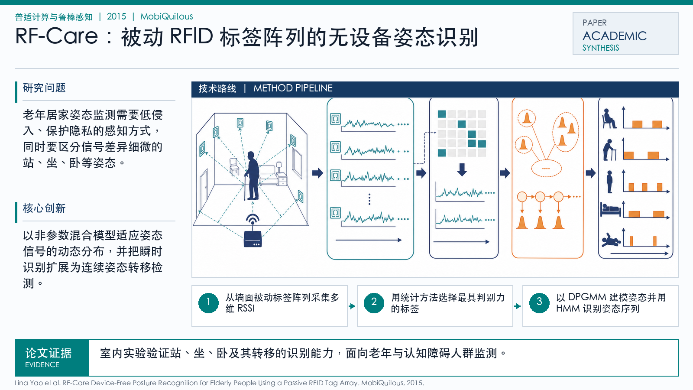

Problem
解决的问题
老年居家姿态监测需要低侵入、保护隐私的感知方式，同时要区分信号差异细微的站、坐、卧等姿态。
Pervasive Computing and Robust Sensing · 2015 · MobiQuitous
RF-Care Device-Free Posture Recognition for Elderly People Using a Passive RFID Tag Array
Problem
老年居家姿态监测需要低侵入、保护隐私的感知方式，同时要区分信号差异细微的站、坐、卧等姿态。
Value
室内实验验证站、坐、卧及其转移的识别能力，面向老年与认知障碍人群监测。
Paper-grounded Academic Summary
该代表页依据原文摘要、贡献段与方法图注生成。方法视觉由 ImageGen 按论文证据逐篇绘制，中文研究问题、技术路线、创新点与实验结论采用确定性排版，以保证内容与字符准确。
打开原文 PDF
Technical Route
Innovation